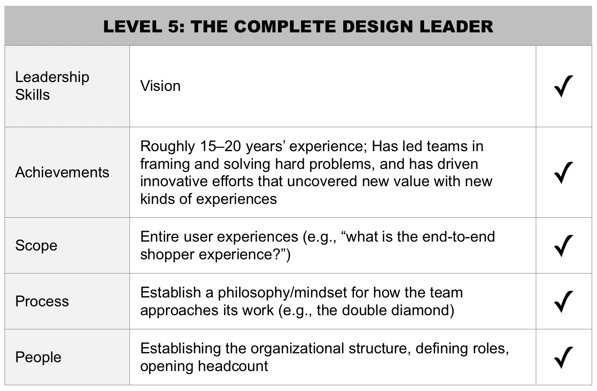
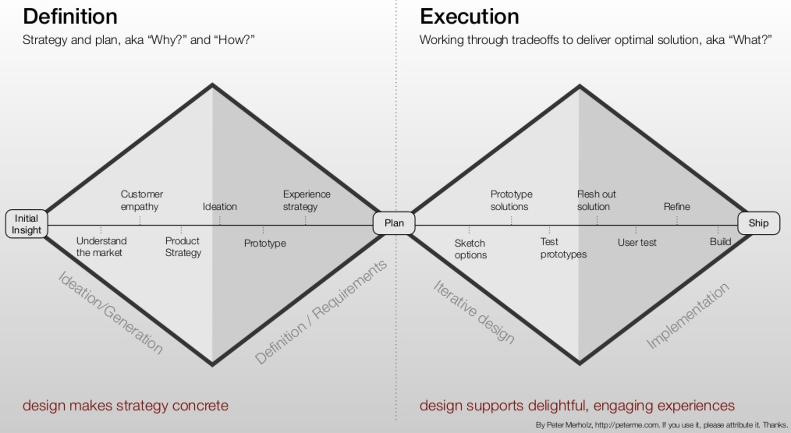
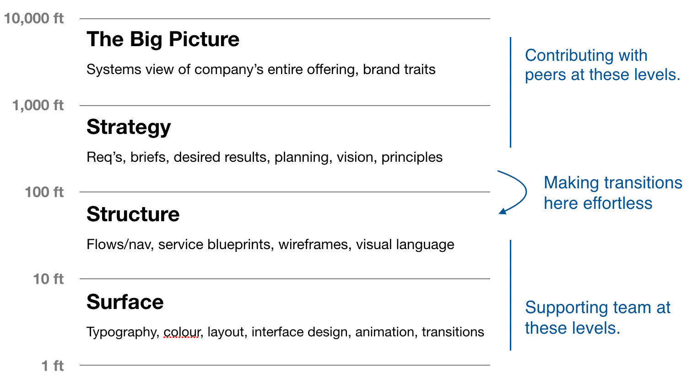

Robb Beal ✦ Product Leader

You've reached the product portfolio intro for Robb Beal, a Veteran, Apple Design Award-Winning Product Leader.
Welcome, I've been expecting you!
Below, I answer a variety of questions with the goal of helping you better understand me as a Product Leader. In many cases, the answers represent Case Studies of my work. This document supplements my LinkedIn profile and you'll find links back to LinkedIn for Case Studies that originate there.
Digital Product work is my life's professional passion. If nothing else, I hope I leave that impression with you. And, regardless of whether I'm a professional fit for you at this moment, if you share that professional passion, please connect with me on LinkedIn.
Tell Me About Yourself
I'm a Father to a perfect-in-every-way adopted 5 YO daughter, Clara and Husband to a professional executive, Tricia.
I learned the value of hard work and practice when, in HS/college, I participated in a musical sport called Drum & Bugle Corps. Watch the video below (of Bluecoats, the Corps I marched in) for a sense of the skill and excellence needed to participate in this sport.
I've been fortunate to have traveled extensively throughout the world and those travels have helped me appreciate the huge importance of diversity. Countries included Turkey, China, South Africa, Croatia, Hungary, Argentina, Chile, Peru, Italy, France, Mexico, Belize, Bahamas.
My eclectic interests and passions include: Kettle Bell Weight Training, Mozzarella, Residential Architecture (e.g. Andrew Skurman Architects), Reposado Tequilas, Giant Pumpkins, and Interior Design (e.g. Jan Showers)
Tell Me About the Time Your Work Really Moved Important Business Metrics

At Booksource in the Summer-Fall 2016, I led the redesign of a Teacher- and Student-facing web app for managing the books in a Classroom Library. The app had seen slow-to-no growth over the past couple of years. In an incredibly short amount of time, I led a brand new team through a product development cycle that put primary emphasis on improving the UX and secondary emphasis on adding new features.
The results of that small investment was a 30% YOY improvement (sustained for 6+ months) in Monthly Active Users. Additionally, by bringing key product recommendation content out onto the app's home page, pageviews for the app's E-Commerce page increased 1000%.
For a full case study and visual tour of this work, see this page.
Talk to Me About Your Experience/Philosophy of Product Leadership
Referring to the leadership levels framework in Peter Merholz and Kristin Skinner's recent book (see excerpt left/above), I'm transitioning to Level 5 (The Complete Product Leader), the highest level.
In terms of achievements, I've led teams in framing and solving hard problems (e.g. my complex fulfillment e-commerce work at F500 Graybar), and have driven multiple innovative efforts that uncovered new value with new kinds of experiences (e.g. my pioneering Social Software work with Spring at UserCreations).
In terms of scope, for much of my recent career, I've owned the entire product experience (e.g., the end-to-end shopping experience at F500 Graybar).
In terms of process, I establish a philosophy/mindset for how the team approaches its work using the Double Diamond process for product development. For my teams, introduction to the Double Diamond process is a vital part of all new team member onboarding.
In terms of people, I've led/managed/hired 20+ product folks and influenced 100s over my career. I set clear expectations for my team members, assist them in achieving those expectations, help them get unstuck, provide them frequent feedback, and generally establish a team culture purpose-built to encourage the best work.
"Robb is a brilliant Product/UX Director and Strategist. I've had the great benefit of being managed and mentored by him across multiple companies throughout my career." —Elizabeth Woods, Product Designer
In terms of cross-functional collaboration, there's a distinct split in the nature of the collaboration between the 2 diamonds: Definition/Discovery and Execution. In the earliest parts of Definition/Discovery, I'm often engaged in collaboration with Engineering/Data Science and Marketing/Growth peers to give just enough shape to a new product/service and to align business and product strategy so that it's meaningful/productive to engage our teams. In Execution, I'm assisting the team by defining/communicating clear goals, decision-making, and roles and expectations.
Tell Me About the Product Design Scales at Which You Work
As shown in the diagram (see left/above), I'm contributing with peers at the Big Picture and Strategy scales, transitioning effortlessly to my team between Strategy and Structure, and supporting my teams in the lower scales.
My contributions at these scales greatly influence how a product works versus how it looks. See my case study from my recent F500 e-commerce work for a deeper dive.
Tell Me About How You Use Metrics/Analytics/Algo's

I'm a huge proponent of using OKRs (Objectives and Key Results) for goal-setting and achievement.
With a passion for stats and having immersed myself in Data Science and Machine Intelligence/Learning over the past few years, I'm very well-prepared to lead the creation of next-gen data+algorithms products.
For more depth, I've detailed my considerable expertise in a separate page.
Tell Me About Your Perspective on Prototyping
After leading the creation of hundreds of active prototypes over thousands of hours throughout my career, it's something I feel deeply expert about. And, I consider active prototyping to be so essential to great digital product work and to the health of world-class product teams that I'd say 75% of the work I've led over the past few years involved active prototyping.
As an example, in the screencast below, I walk through prototyping I led to understand customizations being considered for a complex UI component on Product Details pages in an e-commerce storefront. (Scrub to the 6:18 mark in the screencast for an example of where we interceded with prototyping.)
For more depth, see my Expect Magic: Prototyping and the Power of Pairing Designers post.
Show Me Some Innovative Product Thinking
Pioneering Social Software

I was the Founder and Head of Design of a start-up that did pioneering Social Software (Pre-Facebook,-Pinterest), called Spring.
- It was Social Software and Social Objects (People, Places, Products, Etc) before these terms were coined.
- It was minimalist, content-centric UI long before that trend even began.
- It dealt with how to provide personalization and sharing while respecting privacy.
- There was even a Social Object standard that would remind you of the (Facebook) Open Graph protocol.
All of these thing were super-instinctual to me as I designed it.
I was blessed that Spring was featured in the NY Times and won an O'Reilly Media Award for Product Innovation, my 2nd major innovation award after winning an Apple Design Award for Innovation for my work on Watson at Karelia a year earlier.
Conversational Experiences Before It Was Cool

Circa 2000, I did personal prototyping of a verb-centric conversational UX that would serve as an alternative start page for web explorations. Imagine a UI in which a menu of common web actions like Buy, Sell, Trade, Rent/Lease, Subscribe, Reserve, Play, Join, Publish/Post, Contact (Email, Chat, Text, Call), Etc preceded the traditional Google search field and the choice in that menu informed all subsequent object auto-suggestions (and optionally inserted other forms of speech to make things feel more sentence-like). The prototyping led me to the conclusion that, if the goal of a web start page (e.g., a search engine) is to ultimately get people to take actions on the sites it takes users to, actions/verbs should be higher-class UI citizens on those starting points.
Talk to Me About User Research
Building empathy with my current and prospective customers is foundational for great product work.
To build that empathy, I'm a huge proponent of the Jobs to Be Done framework and its Jobs Stories artifact. Its focus on causality, motivations, and anxieties simply make it a better approach than traditional personas.
When _____, I want to be able to _____, so I can _____.
In the vast majority of my product work, I've led the creation of the user research plans to support a given product development project. My primary responsibility here was choosing appropriate types and sequence of research methods to use given the type of product being developed and the expected time constaints.
A typical user research plan included 3 distinct rounds of research in ~1 months time. The 1st round typically would use Card Sorting, Reverse Card Sorting, and other attitudinal and qualitative research approaches to tease out what's important/valuable to users. Using the learnings from that 1st round, the 2nd round testing would often use Participatory Research approaches where we have users build hypothetical pages with semi-abstract content blocks. Wireframing based on that input would then serve as the design artifact for a final round of testing/feedback.
Show Me Some Novel Interaction Design Work
My experience over the years has shown me how powerful the concept of direct manipulation is to modern UI. When you look at many of the most important and innovative UI metaphors over the past 15 years, you see that more than half of those involve direct manipulation UI metaphors (Google Maps, Tableau, Trello, Etc)
With Spring, I innovated heavily with direct manipulation gestures. One prime example is Spring's Drag Between gesture where you connect, for example, a person to a place with a line between them and display a menu of actions that apply to the two things being connected.
Additionally, see below for 3 other examples of interaction design challenges I solved in designing Spring.